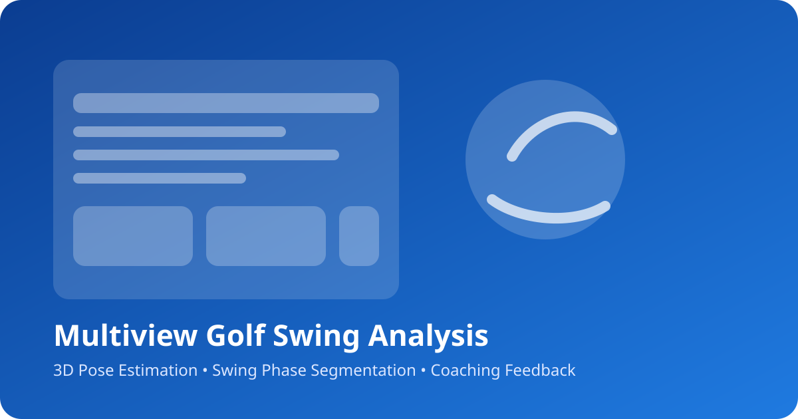

Multi-camera fusion
Fuse synchronized views to generate stable 3D joint trajectories.
Multiview Golf Swing Analysis
3D Pose Estimation • Swing Feedback • Research Toolkit
Research-ready computer vision pipeline
This project combines multi-view pose estimation, swing phase segmentation, and explainable feedback to support athletes, coaches, and researchers.
3D
Pose reconstruction
7
Swing phases tracked
Multi-view
Camera fusion

Designed for research teams and performance coaches who need explainable results.
Fuse synchronized views to generate stable 3D joint trajectories.
Automatically segment address, backswing, impact, and follow-through phases.
Track MPJPE, joint angles, and motion smoothness for objective comparisons.
Rule-based posture insights translate model outputs into coaching cues.
A clear pipeline makes the project easy to extend and demo.
Drop in your own video to instantly showcase the system.
docs/assets/demo.mp4 or link a YouTube video in the
README to replace this placeholder.
Address
Establish posture alignment before initiating movement.
Make performance insights accessible to coaches, athletes, and researchers.
Automate biomechanical analysis and provide consistent swing feedback.
Export clean 3D trajectories for ML experiments or biomechanics studies.
Blend ML models with rule-based explanations to build trust.
Replace these placeholders with real screenshots from your experiments.
Clone the repo, install dependencies, and analyze your first swing.
git clone https://github.com/Asfand6417/Multiview-Golf-Swing-Analysis-and-Correction-using-Deep-Learning-Base-Post-Estimation.git
cd Multiview-Golf-Swing-Analysis-and-Correction-using-Deep-Learning-Base-Post-Estimation
python -m venv .venv
source .venv/bin/activate # Windows: .venv\\Scripts\\activate
pip install -r requirements.txtpython main.py
# Optional: update input paths in main.py to match your videos.
python test_triangulation.py
# Verify multi-view triangulation outputs.Everything you need to present or extend the project.